A flag placed on a hidden square (also the flag-mode button and the 🚩 counter).

A mine on the map (after a loss or when a heart is lost). Also used small as the mine counter (💣). The red square under an exploded mine is drawn by the game.
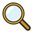
The oracle power-up (a magnifying glass) lying on a revealed safe square, and the Oracle button.

The ice-clearer power-up under a revealed safe square, and the Ice clearer button.
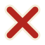
The X on the treasure levels.

A heart you still have (HUD).
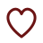
A heart you lost (HUD).
A level star you earned.
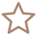
A level star you did not earn.
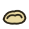
Island mode label (🏝) in the HUD, cards and the "Island cleared" dialog.

Endless mode label (♾).

Goal marker in the HUD (🎯).
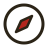
Treasure goal in the HUD and the Free expedition button (🧭).
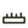
Distance in endless mode (📏).
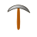
Reveal-mode button (⛏).

Progress and Stats buttons (📊).
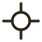
Back-to-centre button (⌖).
Menu button (☰).
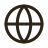
See the island in 3D (🌍).
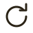
Restart (↻).
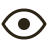
Look around / View (👁).

Mine hit / game over (💥).

Locked adventure level (🔒).

Finished islands (🏆).
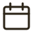
Daily island (📅).

Adventure button (🗺).

Settings (⚙).

Install app (⬇).
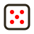
Random seed (🎲).
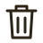
Delete world (🗑).

Daily streak (🔥).
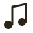
Music (♪).
Done / cleared (✓).

Lost / close (✕).
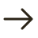
Direction arrows (→); the game rotates this one for ← ↑ ↓.
Back buttons (←).

Next level / Continue (▶).
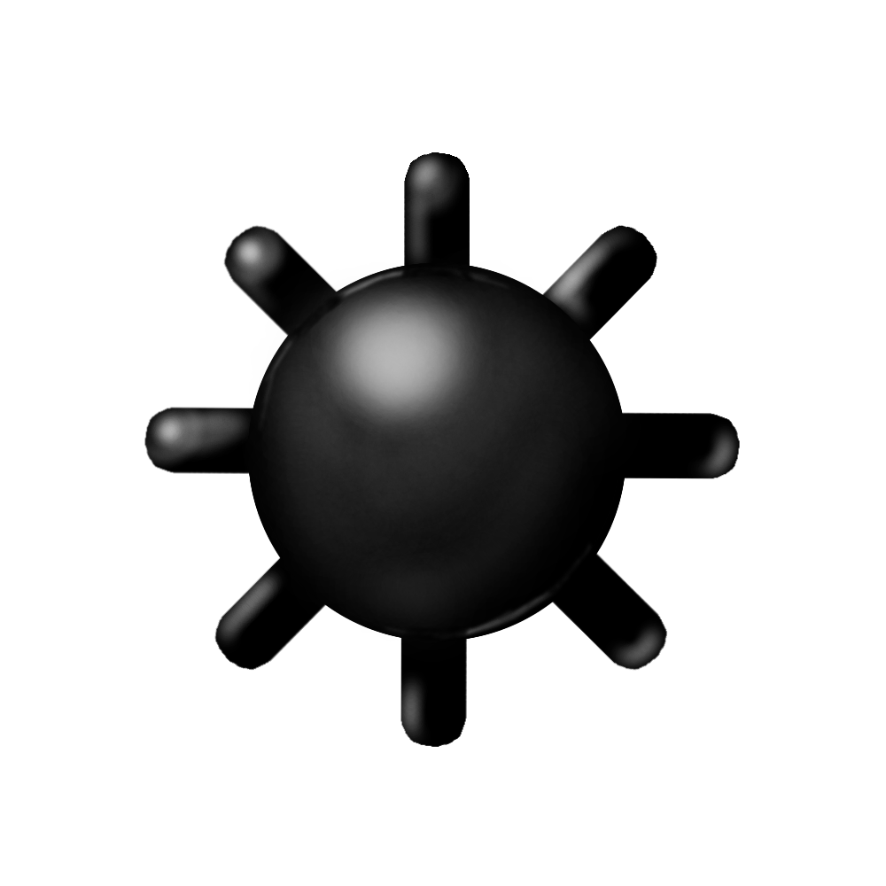
Main app image: home-screen / install icon and browser tab icon. Run
npm run icons after changing it.
My worlds button (🗂).
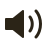
Audio is on (🔊), floating button on the main menu.
Audio is off (🔇).
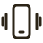
Vibration is on (📳).
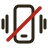
Vibration is off (📴).
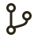
Link to the author page (🐙), floating on the main menu.
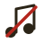
Music is off (♫), floating button on the main menu.
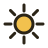
Light paper (☀), in the Dark paper switch.
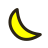
Dark paper (☾), in the Dark paper switch.
Music: previous track (⏮).
Music: next track (⏭).
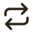
Music: repeat this track (🔁).
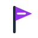
The purple flag for negative mines (space maps only).
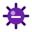
A negative mine, shown when a space game ends (space maps only).
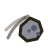
Space islands (meteors), in the free-expedition screen (☄).
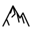
Rock mountains: drawn once in rocky areas of an island (map view).
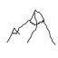
Snowy / ice mountains: one picture for snow areas.
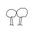
Forest: a small group of trees together.
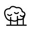
Jungle: a thick leafy clump.
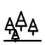
Taiga: a group of pines.
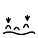
Tundra: a few small pines and tufts.
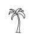
Beach: palm trees along the shore (drawn more often, on thin beaches).
Desert: dunes and a cactus.
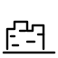
Badlands: flat-topped rock buttes.
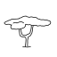
Savanna: an acacia tree.
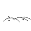
Grassland: soft hills and grass tufts.
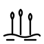
Swamp: reeds in the water.
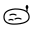
A lake inside the island.
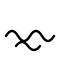
Open sea, wave variation 1 (outside the island).
Open sea, wave variation 2.
Open sea, wave variation 3.
Sea monster 1: a serpent (rare, on the open sea).
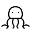
Sea monster 2: a kraken (rare, on the open sea).
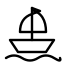
A ship sailing the open sea (rare).
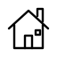
Home: marks where the island starts.
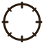
The compass button that takes you back to the start (shown when you are far away): the ring and tick marks.
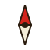
The compass needle, drawn pointing UP; the game rotates it so the red point aims at the start.
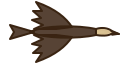
Menu eagle, flap frame 1 (seen from above, flying right).
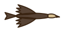
Menu eagle, flap frame 2 (seen from above, flying right).
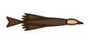
Menu eagle, flap frame 3 (seen from above, flying right).
UFO crossing the menu background in the space song (seen from the side, level).
The main-menu logo (scroll and mine), cut out with a transparent background.
Mouse pointer on desktop (a feather). It sits up and to the right of the pointer; its bottom-left tip is the click point.